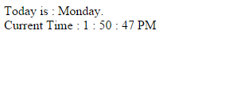

<!DOCTYPE html PUBLIC "-//W3C//DTD XHTML 1.0 Transitional//EN" "http://www.w3.org/TR/xhtml1/DTD/xhtml1-transitional.dtd">
<html xmlns="http://www.w3.org/1999/xhtml">
<head>
<meta http-equiv="Content-Type" content="text/html; charset=utf-8" />
<title>Untitled Document</title>
</head>

<body>
<script>
//Create a variable called "today" which will contain the current date
var today = new Date();
//Create a variable called "day" which will contain the current day and assign it to the "today" variable - today.*method*
var day = today.getDay();
//In recent weeks we have created an array with data sets, this time create an array in its more somple form (research) and call it "daylist"
var daylist = new Array("Sunday","Monday", "Tuesday", "Wednesday", "Thursday", "Friday", "Saturday","Sunday");
	//print to the document the following "Today is: *day* <br />"
	document.write("<p>Today is : " + daylist[day] +"<br /></p>");
	//Create a variable called hour that will contain the current hour and assign it to the "today" variable - today.*method*
	var hour = today.getHours();
	//Create a variable called minute that will contain the current minute and assign it to the "today" variable - today.*method*
	var minute = today.getMinutes();
	//Create a variable called second that will contain the current second and assign it to the "today" variable - today.*method*
	var second = today.getSeconds();
	
	
        var prepand = (hour >= 12)? " PM ":" AM "; //These lines determin whether the time is AM or PM
        hour = (hour >= 12)? hour - 12: hour; //Read and explain in comments how this works.
		
		// It is automatically going to only count from 0 hours till 12 hours not the ususal 24h time frame.
		//Also we want to see if it is displaying Morning or Evening Time, so we want to add  AM , PM or else if time = 12:00:00 it will put Noon
		
//The following If statement will determine if the correct Prepand is PM
		if (hour===0 && prepand===' PM ') {    
			if (minute===0 && second===0){  
				hour=12;
				prepand=' Noon';
			}  
			else{  
				hour > 12;
				prepand=' PM';
			} 
			
		}  
//Create an If statement that will determine if the correct Prepand is AM
if (hour === 0 && prepand === ' AM '){
	if (minute ===0 && second ===0){
		hour = 12;
		prepand = ' Noon';
	}
	else {
		hour < 12;
		prepand =' AM';
	}
}
//Prin the following statement "Current time: hour:minute:second	
document.write("<p>Current Time : " + hour + " : " + minute + " : " + second + prepand + "</p>");

</script>

<!---->

</body>
</html>
